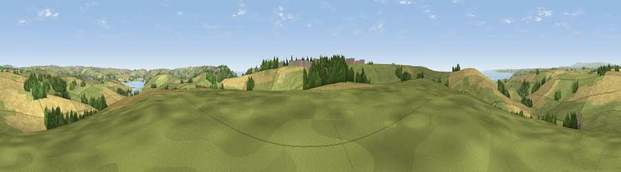

Viewpoint near Malborough
#18171 in England · top 41% of its area beats it · near MalboroughThe view, rendered

A 360° render of this exact spot computed from the terrain model, tree cover and land cover — summer colours, afternoon light, calibrated against photographs of famous viewpoints. Real trees, hedges and buildings will differ in detail.
The panorama
Grey silhouette: terrain skyline in each direction (720 bearings, Earth curvature and refraction included). Dashed green: skyline with trees (+15 m) and buildings (+8 m) as obstacles. Blue strip: how far the ground is visible on each bearing.
Where the view opens
Wedge length = distance to the farthest visible ground on that bearing (vegetation-aware). Rings at 10, 25 and 50 km.
What fills the view
48% grassland · 42% cropland · 6% woodland · 2% water · 2% built-up
Angular shares of the visible panorama (visual magnitude), not map area. Landscape diversity 0.45 (0–1 Shannon).
Key numbers
More beautiful places nearby
The staircase of upgrades: each row has a higher view potential than everything closer. Driving times are estimates from straight-line distance, calibrated against real road routing — check an actual route before setting out.
| Place | Direction | Drive | Score |
|---|---|---|---|
| Viewpoint near Galmpton | SW · 3 km | ~7 min | 76.4 |
| Viewpoint near Hope | SW · 3 km | ~8 min | 84.4 |
| Viewpoint near East Prawle | SE · 7 km | ~15 min | 84.6 |
| Pencarrow Head | W · 57 km | ~78 min | 86.0 |
| Viewpoint near Stenalees | WNW · 73 km | ~96 min | 88.0 |
| Viewpoint near Crackington Haven | NW · 79 km | ~103 min | 88.1 |
| Golden Cap | NE · 87 km | ~111 min | 88.7 |
| The Knoll | ENE · 95 km | ~119 min | 91.0 |
50.25103, -3.81183 · source: screening · position refined by local search. Computed location — check access rights before visiting.